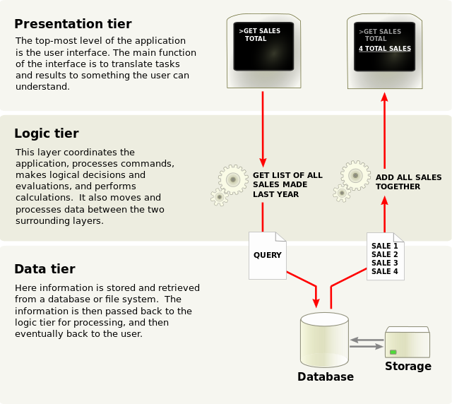

Architectural Patterns
Main Ideas
Give Structure
Separate Concerns (Easier to maintain and test)
Increase Flexibility
High Cohesion and Low Coupling
Examples
Layered (N-Layer)
Microservices(SOA)
N-Tier Architecture
3 - Tier Architecture:
- Data Layer
- Business(Logic) Layer
- Presentation Layer (Service Layer)
3 - Tier Architecture information flow
UI Development Patterns
MVC
Model
View
Controller
Separated Presentation: Ensure that any code that manipulates presentation only manipulates presentation, pushing all domain and data source logic into clearly separated areas of the program -- Martin Fowler
A well developed application should be able to support multiple presentations
Domain objects should be self contained

In this approach, known as the Model View Controller (MVC) or Model 2 architecture, you let each technology concentrate on what it excels at. The original request is handled by a servlet. The servlet invokes the business-logic and data-access code and creates beans to represent the results (that’s the model). Then, the servlet decides which JSP page is appropriate to present those particular results and forwards the request there (the JSP page is the view). The servlet decides what business logic code applies and which JSP page should present the results (the servlet is the controller). --coreServlets
- Controller(Servlet)
- View(JSP)
- Model(Java Class, Action)
You can use BeanUtilities.populateBean(UserData, request);
Servlet
ValueObject value = new ValueObject(...);
request.setAttribute("key", value);
RequestDispatcher dispatcher = request.getRequestDispatcher("SomePage.jsp");
dispatcher.forward(request, response);
JSP Page
<jsp:useBean id="key" type="somePackage.ValueObject" scope="request"/> <jsp:getProperty name="key" property="someProperty" />
Example
BankCustomer customer = BankCustomer.getCustomer(request.getParameter("id"));
String address;
if (customer == null) {
address = "/WEB-INF/bank-account/UnknownCustomer.jsp";
} else if (customer.getBalance() < 0) {
address = "/WEB-INF/bank-account/NegativeBalance.jsp";
request.setAttribute("badCustomer", customer);
} else if (customer.getBalance() < 10000) {
address = "/WEB-INF/bank-account/NormalBalance.jsp";
request.setAttribute("regularCustomer", customer);
} else {
address = "/WEB-INF/bank-account/HighBalance.jsp";
request.setAttribute("eliteCustomer", customer);
}
RequestDispatcher dispatcher = request.getRequestDispatcher(address);
dispatcher.forward(request, response);
- Schildt, Herbert. Java: the complete reference. McGraw-Hill Education Group, 2014.
- http://pdf.coreservlets.com/MVC.pdf
- https://martinfowler.com/eaaDev/uiArchs.html
- https://msdn.microsoft.com/en-us/library/ee658109.aspx